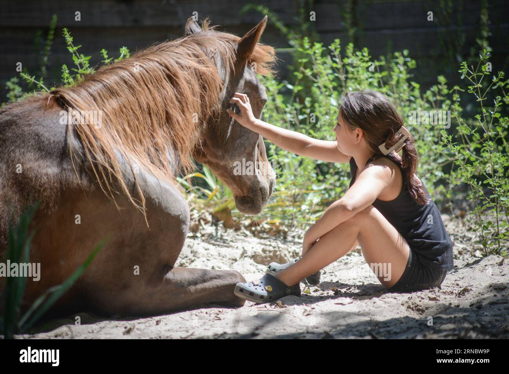
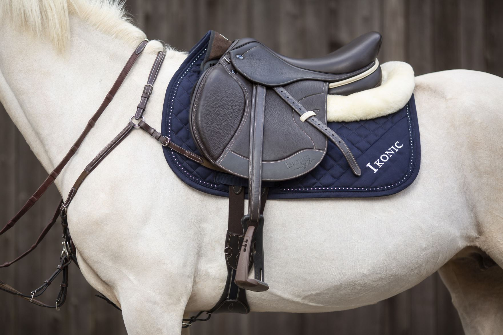
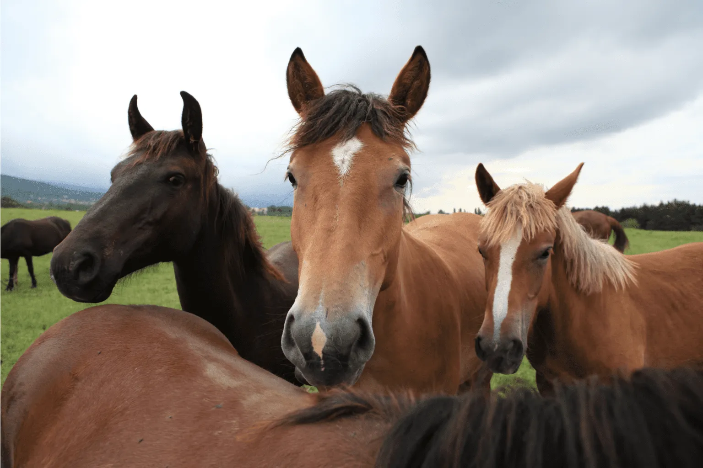

Disciplines · Breeds · Skills
The Sport of Equestrianism
Explore the bond, breeds, gear, and skills that make riding a lifelong passion — from classical dressage to rodeo, find your own discipline.

The Bond Between Horse and Rider
The relationship between horse and rider is built on trust, communication, and mutual respect. It’s a partnership that develops over time and practice.

Equus ferus caballus
A large, social mammal that evolved on open plains — naturally alert, fast, and herd-bound.
Gear & Tack
The right equipment is essential for safety and comfort. This includes saddles, bridles, bits, girths, stirrups, and protective gear for both horse and rider.

Diet
Built to Graze, Not to Skip Meals
Forage — hay, grass, or haylage — makes up most of a horse's diet and should be available almost constantly. Long gaps without it can lead to colic, one of the most serious health issues horses face.
Horses in regular work also get a concentrate feed to cover extra energy demands, and sometimes supplements based on a vet's recommendation. Clean water must be available at all times, without exception.
Fundamentals & How It Works
Success in riding depends on understanding the basics: balance, aids, posture, and the training process. Learning and practicing these fundamentals lead to proficiency and enjoyment.

Popular Breeds You'll Meet at the Stable
Thoroughbred
Built for speed and the foundation of horse racing. Sensitive and high-energy, better suited to experienced riders.
Quarter Horse
The most popular breed in the U.S. and the standard of Western riding — calm and versatile for ranch work or trail riding.
Arabian
One of the oldest breeds in existence, known for endurance, a distinctive profile, and a close bond with its owner.
Warmbloods
Hanoverian, Dutch Warmblood, and Oldenburg lines bred specifically for sport, dominating dressage and show jumping.
Cob & Irish Draught
Steadier, forgiving breeds often recommended to beginners or nervous riders.
Andalusian
From Spain, with a long association with classical horsemanship — proud carriage and responsiveness.
Two Traditions
Western vs. English Riding
Both rely on communication through seat, leg, and rein — but they differ in feel, equipment, and history.
Western
Grew out of cattle ranching, where horses needed to stop, turn, and work cattle with minimal input over long days.
- Saddle
- Deep and secure, with a horn originally meant for roping.
- Reins
- Held in one hand; the horse responds to neck-reining.
- Disciplines
- Reining, barrel racing, cutting, trail and pleasure riding, rodeo events.
English
Comes from European cavalry and classical traditions, with finer, more direct contact and collected movement.
- Saddle
- Smaller, with no horn.
- Reins
- One in each hand, keeping direct contact with the horse's mouth.
- Disciplines
- Dressage, show jumping, eventing, hunter and equitation classes, polo.
Tack & Gear
Fitted Right, for Safety and Comfort
Poorly fitted tack can cause pain or injury and will usually affect how the horse moves.
Saddle
The rider's seat — must be fitted by someone qualified to suit the shape of both horse and rider.
Bridle & Bit
Holds the bit in the horse's mouth, allowing rein contact. Bits vary widely in design and pressure.
Girth / Cinch
Holds the saddle in place. A loose girth is one of the most common and dangerous mistakes a new rider can make.
Stirrups & Leathers
Give the rider a place to rest their feet and a major source of balance.
Saddle Pad
Sits beneath the saddle to protect the horse's back and absorb sweat.
Rider Gear
A certified helmet is not optional. Boots with a small heel and gloves round out the essentials.
Timeline
How Long It Takes to Learn
Learning to ride is a physical and mental skill that develops over years, not weeks.
0–6 Months
Mounting, dismounting, balance at a walk, steering, stopping — often on a lunge line with an instructor.
6 Months–2 Years
Riders work off the lunge, learn to canter, and coordinate their aids with more independence.
2–4 Years
Riders work a horse through all three gaits, perform basic school movements, and start competing at entry level.
4+ Years
Real proficiency: the ability to ride different horses confidently and help train them.
Beyond Riding
Skills Every Rider Needs on the Ground
A surprising number of riding injuries happen on the ground rather than in the saddle, so these are taken seriously even by experienced riders.
Grooming
Brushing, picking out hooves, and checking for heat or swelling — also one of the best ways to build trust.
Tacking Up
A saddle or bridle put on wrong can cause real problems, so getting this right is a basic requirement.
Ground Handling
Leading safely at the shoulder, tying with a quick-release knot, and moving calmly around the horse.
Daily Observation
Knowing what's normal for a horse — its legs, energy, appetite — so anything unusual stands out fast.
Stable Management
Mucking out stalls, fresh bedding, and managing feed and hay safely.
Reading Body Language
Ears, eyes, and tail position all say something. This is the hardest skill — and the one that matters most.
It asks for your time, your patience, and your willingness to keep learning — and in return, it offers a connection unlike any other.